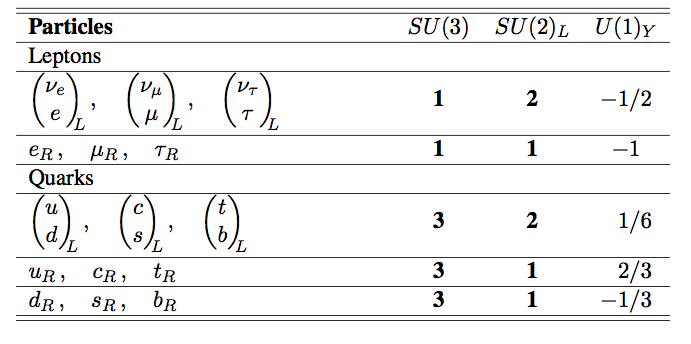

The misteries of the neutrinos
Contents
The misteries of the neutrinos#
import time
print(' Last version ', time.asctime() )
Last version Mon Jan 30 17:18:48 2023
About
These lectures are about some aspects of Neutrino Physics.
They cover the relevance of the neutrino in the construction of the Standard Model, neutrino oscillations and double-beta decay searches.
Introduction#
Neutrinos
are the closest thing to nothing we have discovered.
played an important role on the construction of the Standard Model (SM)
have provided the only evidence of Physics Beyond the SM (BSM)
are unique, neutrinos are the only fundamental fermion that can be their own antiparticle.
Two mayor discoveries and on one confirmation in the last decades:
Higgs discovery (ATLAS, CMS) pdg-review
Confirmation of the Cabibbo-Kobayashi-Maskawa Unitary Matrix (BaBar, Belle, LHCb, …), pdg-review
Discovery of the neutrino oscillations (Super-Kamiokande, SNO+) pdg-review
Neutrino oscillation simplified summary:
{kind=link}
Fermions in the SM:
 |
Leptons in the SM:
Neutrinos in the SM:
they only interact weakly!
they are \(\nu_L\), left-chirality neutrinos, and \(\bar{\nu}_R\), right-chirality anti-neutrinos.
neutrinos are massless! There is no \(\nu_R\) to intriduce the mass in the legrangian:
{kind=link}
Neutrino interacts only via this interactions lagrangian, CC (\(W^\pm\)) or NC (\(Z\)), :
where \(g\) is the weak constant and \(\theta_W\) the Weiberg angle.
The V-A structure is explicit in the interaction lagrangian.
The lepton Number in the SM is (accidently) preserved.
Futhermore, Flavour Lepton Number is also accidentally preserved: electronic, muonic and tauonic.
Neutrinos in Nature#
Neutrinos in Nature:
they have no color, no electric charge, and a tiny mass!
the \(\nu_L\), left-chirality, are called ‘neutrinos’ and \(\bar{\nu}_R\), right-chirality, ‘antineutrinos’
there are three light neutrino flavours, \(\nu_e, \nu_\mu, \, \nu_\tau\).
Neutrinos oscillates between different flavours.
Neutrinos do no preserve flavour leptonic number, and may preserve leptonic number
There is a mixing neutrino matrix, \(U_{PMNS}\), Pontecorbo-Maki-Nakagawa-Sakata, with three angles and one CP phase (if neutrinos are Dirac).
Their masses are unknown. But there values are very small compared with the rest of the leptons \(m_\nu \ll m_e\).
We need to complete the SM to include neutrinos masses: either Dirac (extended SM) or Majorana (BSM).
About Dirac neutrinos#
A Dirac spinor fulfills the Dirac equation and it can be decomposed into left and right chirality parts:
And the parity transformation reverts them:
Therefore, a parity conserving theory introduces both in equal footing.
In the chiral representation, a Dirac spinor is composed of two Weyl spinors \(\psi_L, \psi_R\):
They admit a phase redefinition, without physical consequences
This global simmetry is associated to a conserved charge, electric charge, lepton number, etc.
A mass term in the lagrangian has the form:
As the left-chiral fields are in a duplet of \(SU(2)_L\), in order to preserve the original gauge invariant, we introduce an interaction with the Higgs doublet.
Let’s consider first one family, for charged leptons, the mass term
where \(\lambda_e\) is an adimensional constant, the electron Yukawa coupling.
And
After spontaneous symmetry breaking (SSB), in the unitary gauge:
where \(v\) is the Higgs expectation value.
We get:
where:
We can generate a mass for a Dirac neutrino, using the Higgs charge conjugate, in the unitary gauge:
The possible mass terms of the lagrangian is:
that will result on a mass term:
About Majorana neutrinos#
A Majorana spinor is a solution of the Dirac equation.
In nature all fermions are Dirac. The only one that can be Majorana is the neutrino.
A Majorana spinor is its own charge conjugate:
Where, the charge conjugation operation \(\mathcal{C}\) is:
If \(\Psi\) is a left (right) chiral spinor \(\Psi_L\), the charge conjugate, \(\Psi_L^c\) is a right (left) chiral one:
A Majorana spinor can be constructed from a single left (right) Weyl spinor \(\psi_L\), using its charge conjugate:
That transforms as a right-handed Weyl spinor. The Majorana spinor is:
That fulfills the condition:
And it is own antiparticle
There is no global phase symmetry for a Majorana spinor.
And therefore there are no charge conserved. The Majorana spinor is a truly neutral particle!
The mass term for left-chiral neutrinos will be:
As \(\nu_L\) are part of duplet \(SU(2)_L\) in the SM, in order to preserve the gauge symmetry, the simplest term to generate the mass is to include a double interaction with a scalar Higgs.
where \(\alpha\) is a dimensionless coupling and \(\Lambda\) an energy scale.
This is known as the Weinberg operator. It is the only 5-dim operation that extends the SM.
After the SSB. It translates to:
Now the neutrino smalleness of the neutrino mass cal be explained via the energy scale \(\Lambda\), the coupling \(\alpha\) or both.
Some urgent questions#
Is there a CP phase in the neutrino sector?
Is the neutrino its own antiparticle. Is Dirac or Majorana?
What is the neutrino mass? Which is the neutrino mass hierarchy?
Why the neutrino mass is so small? Is there a new energy scale, \(\Lambda\), related with neutrino masses?
The different scale of neutrino masses compared with other fermions may be an indication of a new scale of energy.
{kind=link}